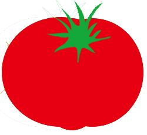

<ons-page id="recipi-page">
    <ons-toolbar>
        <div class="left"><ons-back-button>戻る</ons-back-button></div>
        <div class="center">レシピだよ</div>
    </ons-toolbar>

    <div style="text-align: center" id="PageRes">

        <h2>材料を教えるね</h2>
        
        <div class="recipitext" id="recipitext1"></div>
        <div class="recipitext" id="recipitext2"></div>
        <div class="recipitext" id="recipitext3"></div>
        <div class="recipitext" id="recipitext4"></div>
        <div class="recipitext" id="recipitext5"></div>

        <br>
        

    </div>
</ons-page>å